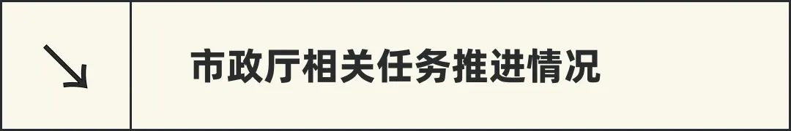

✦ 确定了 App 中积分功能的开发需求，初步讨论了提案功能需求

✦ 英文推特招募选定suka（暂时参与our polis项目组，之后看情况再继续招募）
✦内容｜AAAny招募和邀请码、twitter space内容策展&嘉宾邀请、土耳其发布会延期公告
✦ SeeDAO x Dethings（媒体合作，已宣告）
✦SeeDAO x Gate.io（合作商谈，初步对接，后续可能有上币合作）
✦SeeDAO x Mcg ｜SeeDAO x X winner （项目合作商谈评估，不是很合适，有菠菜性质，不适合）

✦ 常规运维
✦ 给自动化小组 整理日历规则，实用 Demo
✦ 深化社区软件项目技术线规则

✦ 本周新增P1提案：Vitalik英文共读会 (001期)
/ 挑选3篇 Vitalik 文章，由领读人带领大家共学，1篇/周
/ 在提升英语能力的同时，也展开对于这些议题的探索
✦ P2提案《SeeDAO logo 及 Seed NFT 衍生设计品社区征集活动》、《白皮书英文版翻译计划》通过投票。


✦ 项目推进：翻译一本书，｜选书会 + 译者招募（有兴趣的小伙伴速来撩）🔥
✦ 共学｜AI 翻译的事儿，整体评估和筹备。（暂定可以安排两期｜有兴趣的小伙伴欢迎给我们你的想法）
✦ 翻译公会 Jeanne 《Vitalik: 推土机 vs 否决制，以及它们定义的政治坐标》

✦ 分享主题：一起探索 DAO 是什么
/ 分享嘉宾：智鹏 0x00pluto｜独立研究员、WeDAO Founder、全链游构建者
✦ 活动 : 投研公会正在开展 Dao Tool 调研活动，诚邀小伙伴来参加认领研究赛道目前赛道
✦ 投研公会 Jason《以太坊PoS的过去、现在与未来》

✦ 研发公会第78期周会 | 开源项目分群、开源项目评审、Showcase
✦ Show Case 环节招募及展示
Showcase是研发公会为大家提供了一个展示交流平台，面向所有个人和项目方。
如果你是项目方想要推广项目💻
如果你多才多艺想要一个平台展示自己🙋
如果你有想法需要寻找小伙伴一起实现👫
那么，研发公会的周会Showcase环节很适合你🙌
招募表单👉 https://tally.so/r/mBpL65


所以，一起来浪费这段时光吧！

编者按：
“剥削” 叙事作为意识形态对现实有一定的解释力，可符合事实的故事未必能够开启未来。言说即创世，创世有风险。如果我们希望过上更美好的生活，需要的其实是珍惜每一次对话的机会。学术文本的意向性最为澄明，不仅对于解放思想而言很有必要，而且可能解锁许许多多的“第一次”。为了激发大家聊想法、做事情、留名声的热情，我们还可以尝试将成就上链。
—